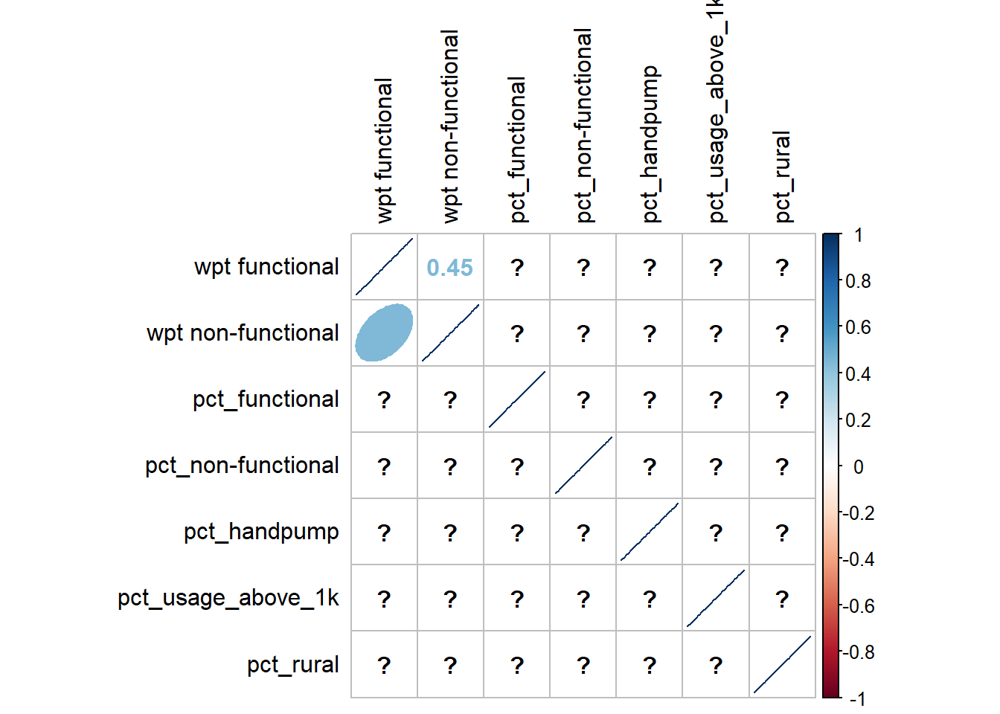
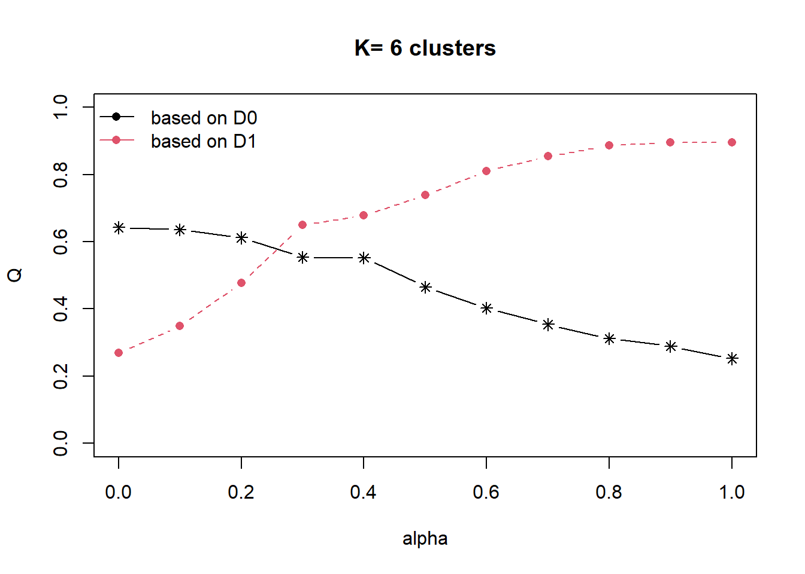
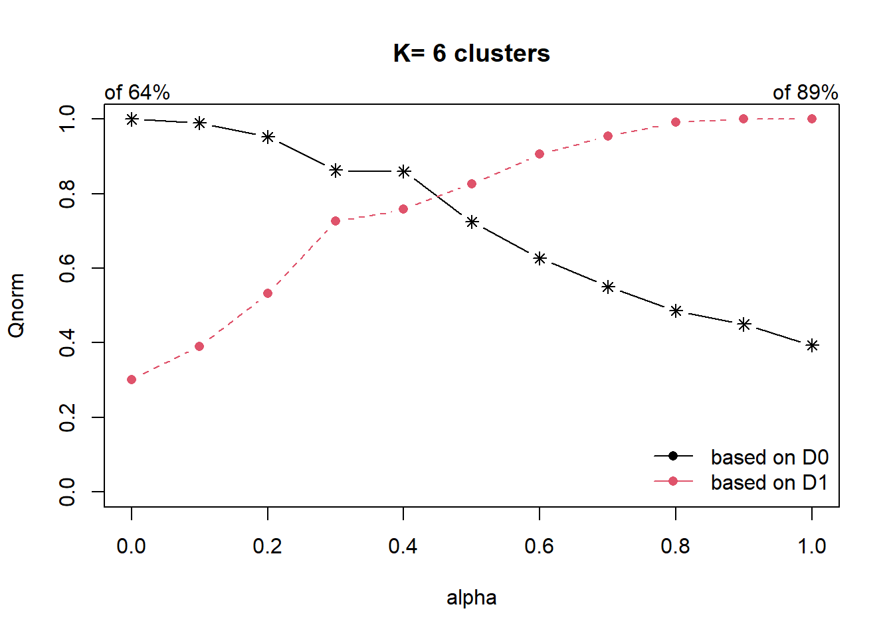
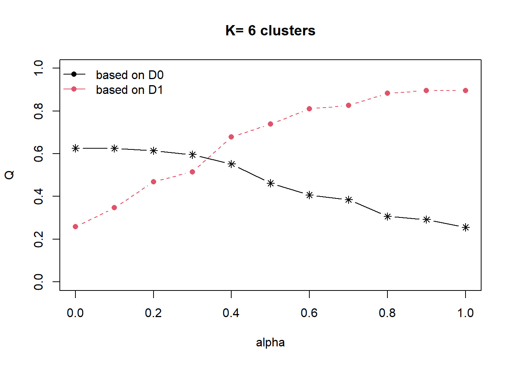

pacman::p_load(sf, tidyverse, tmap, funModeling, sfdep, rgeoda, corrplot, cluster, NbClust, knitr, dplyr, ClustGeo, factoextra, heatmaply, spdep)Regionalisation of Multivariate Water Point Attributes with Non-spatially Constrained and Spatially Constrained Clustering Methods
Overview
Introduction
Regionalisation is the process of creating regions. It is one of the clustering methods which aims at grouping observations that are similar not only in statistical attributes but also in spatial location. Therefore, regionalisation absorbs the same logic as traditional clustering methods and also applies a series of geographical constraints.
The Data
Apstial data
For the purpose of this assignment, data from WPdx Global Data Repositories will be used. There are two versions of the data. They are: WPdx-Basic and WPdx+. You are required to use WPdx+ data set.
Geospatial data
Nigeria Level-2 Administrative Boundary (also known as Local Government Area) polygon features GIS data will be used in this take-home exercise. The data can be downloaded either from The Humanitarian Data Exchange portal or geoBoundaries.
R package
The packages will be used for this analysis:
sf: for importing and processing geospatial data,
tidyverse: for importing and processing non-spatial data.
Data Processing and Wrangling
Importing water point data
wp_nga <- read_csv("data/WPdx.csv") %>%
filter(`#clean_country_name` == "Nigeria")Convert Well Known Text data
There is a column called New Georeferenced Column which represent spatial data in a textual format. And this kind of text file is popularly known as Well Known Text(wkt).
There are two steps to convert this wkt format into a sf data frame.
Firstly, st_as_sfc() of sf package is used to derive a new field called Geometry as shown in the code chunk below.
wp_nga$Geometry = st_as_sfc(wp_nga$`New Georeferenced Column`)Next, st_sf() will be used to convert the tibble data frame into sf data frame.
wp_sf <- st_sf(wp_nga, crs=4326) The code chunk below is used to
head(wp_sf)Importing Nigeria LGA level boundary data
nga <- st_read(dsn="data",
layer="nga_admbnda_adm2_osgof_20190417",
crs=4326)Checking duplicate area name
duplicated can retrieve which elements of a vector or data frame are duplicate. The code chunk below can be used to determine the duplicate elements.
duplicate_area <- nga$`ADM2_EN`[nga$`ADM2_EN` %in% nga$`ADM2_EN`[duplicated(nga$`ADM2_EN`)]]
index <- which(nga$`ADM2_EN` %in% nga$`ADM2_EN`[duplicated(nga$`ADM2_EN`)])
duplicate_area
indexThere are 12 duplicate elements. Then we can check the location of each element by using tmap.
tmap_mode("view")
tm_shape(nga[nga$`ADM2_EN` %in% duplicate_area,]) +
tm_polygons()Then we can compare the map with the google map, and we can find the correct ADM2_EN.
| Index | Original ADM2_EN | Correct ADM2_EN |
|---|---|---|
| 94 | Bassa | Bassa(Kogi) |
| 95 | Bassa | Bassa(Plateau) |
| 304 | Ifelodun | Ifelodun(Kwara) |
| 305 | Ifelodun | Ifelodun(Osun) |
| 355 | Irepodun | Irepodun(Kwara) |
| 356 | Irepodun | Irepodun(Osun) |
| 519 | Nasarawa | Nassarawa |
| 520 | Nasarawa | Nasarawa |
| 546 | Obi | Obi(Benue) |
| 547 | Obi | Obi(Nasarawa) |
| 693 | Surulere | Surulere(Lagos) |
| 694 | Surulere | Surulere(Oyo) |
The code chunk below is used to update the correct ADM2_EN.
nga$`ADM2_EN` [c(94,95,304,305,355,356,519,546,547,693,694)] <- c("Bassa(Kogi)","Bassa(Plateau)",
"Ifelodun(Kwara)","Ifelodun(Osun)",
"Irepodun (Kwara)","Irepodun(Osun)",
"Nassarawa","Obi(Benue)","Obi(Nasarawa)",
"Surulere(Lagos)","Surulere(Oyo)")We can whether duplicate elements exist or not now.
length(nga$`ADM2_EN`[ nga$`ADM2_EN` %in% nga$`ADM2_EN`[duplicated(nga$`ADM2_EN`)] ])Point in Polygon Overlay
Although wp_sf sf data frame consists of a field called #clean_adm2 which by right should provides the LGA name of the water point located. However, it is always a good practice to be more caution when dealing with data accuracy.
We are going to use a geoprocessing function (or commonly know as GIS analysis) called point-in-polygon overlay to transfer the attribute information in nga sf data frame into wp_sf data frame.
wp_sf <- st_join(wp_sf, nga)write_rdsof readr package is used to save the wp_sf data frame into an output file in rds data format. The output file is called wp_nga and saved in data sub-folder.
wp_nigeria <- write_rds(wp_sf,
"data/wp_nigeria.rds")Data Wrangling
Recode NA values into string
The code chunk below is used to recode all the NA values in #status_clean field into Unknown.
wp_nigeria <- read_rds("data/wp_nigeria.rds") %>%
mutate(`#status_clean`= replace_na(`#status_clean`, "Unknown"))freq(data=wp_nigeria,
input = '#status_clean')Extracting Water Point Data by functional, non-functional and unknown
We are going to extract water point records by using #status_clean column.
The code chunk below is used to extract functional water points.
wpt_functional <- wp_nigeria %>%
filter(`#status_clean` %in%
c("Functional",
"Functional but not in use",
"Functional but needs repair"))The code chunk below is used to extract non-functional water points.
wpt_nonfunctional <- wp_nigeria %>%
filter(`#status_clean` %in%
c("Abandoned/Decommissioned",
"Abandoned",
"Non-Functional",
"Non functional due to dry season",
"Non-Functional due to dry season"))The code chunk below is used to extract unknown water points.
wpt_unknown <- wp_nigeria %>%
filter(`#status_clean` == "Unknown")Extracting Water Point Data by main technology
The code chunk below is used to display the distribution of technology adopted by water points.
freq(data=wp_nigeria,
input = '#water_tech_category')We are going to categorize the technology into three types: Hand Pump, Mechanized Pump and Unknown(includes NA values, Tapstand, Rope and Bucket).
The code chunk below is used to extract water points by category.
wpt_handpp <- wp_nigeria %>%
filter(`#water_tech_category` %in%
c("Hand Pump"))
wpt_mechanizedpp <- wp_nigeria %>%
filter(`#water_tech_category` %in%
c("Mechanized Pump"))Extracting Water Point Data by usage capacity
freq(data=wp_nigeria,
input = 'usage_capacity')The code chunk below is used to split usage_capacity into two categories (<1000 and >=1000).
wpt_usage_cap_below_1k <- wp_nigeria %>%
filter(`usage_capacity` %in%
c("50","250","300"))
wpt_usage_cap_above_1k <- wp_nigeria %>%
filter(`usage_capacity` %in%
c("1000"))Extracting Rural Water Point Data
freq(data=wp_nigeria,
input = 'is_urban')wpt_rural <- wp_nigeria %>%
filter(`is_urban` %in%
c("FALSE"))Performing Point-in-Polygon Count
The code chunk below is going to create a new data frame nigeria_wp to store the newly-derived variables.
nigeria_wp <- nga %>%
mutate(`total wpt` = lengths(
st_intersects(nga, wp_nigeria))) %>%
mutate(`wpt functional` = lengths(
st_intersects(nga, wpt_functional))) %>%
mutate(`wpt non-functional` = lengths(
st_intersects(nga, wpt_nonfunctional))) %>%
mutate(`wpt unknown` = lengths(
st_intersects(nga, wpt_unknown))) %>%
mutate(`wpt handpump`=lengths(
st_intersects(nga, wpt_handpp))) %>%
mutate(`wpt mechpump`=lengths(
st_intersects(nga, wpt_mechanizedpp))) %>%
mutate(`wpt usage_below_1k`=lengths(
st_intersects(nga, wpt_usage_cap_below_1k))) %>%
mutate(`wpt usage_above_1k`=lengths(
st_intersects(nga, wpt_usage_cap_above_1k))) %>%
mutate(`wpt rural`=lengths(
st_intersects(nga, wpt_rural)))Saving the Analytical Data Table
The code chunk below is used to generate related percentage.
nigeria_wp <- nigeria_wp %>%
mutate(`pct_functional` = `wpt functional`/`total wpt`) %>%
mutate(`pct_non-functional` = `wpt non-functional`/`total wpt`) %>%
mutate(`pct_handpump` = `wpt handpump`/`total wpt`) %>%
mutate(`pct_mechpump` = `wpt mechpump`/`total wpt`) %>%
mutate(`pct_usage_below_1k` = `wpt usage_below_1k`/`total wpt`) %>%
mutate(`pct_usage_above_1k` = `wpt usage_above_1k`/`total wpt`) %>%
mutate(`pct_rural` = `wpt rural`/`total wpt`) %>%
select(3:4, 9:10, 18:33)write_rds(nigeria_wp, "data/nigeria_wp.rds")nigeria_wp <- read_rds("data/nigeria_wp.rds")The code chunk below is
summary(nigeria_wp) ADM2_EN ADM2_PCODE ADM1_PCODE ADM0_EN
Length:774 Length:774 Length:774 Length:774
Class :character Class :character Class :character Class :character
Mode :character Mode :character Mode :character Mode :character
total wpt wpt functional wpt non-functional wpt unknown
Min. : 0.0 Min. : 0.00 Min. : 0.00 Min. : 0.00
1st Qu.: 45.0 1st Qu.: 17.00 1st Qu.: 12.25 1st Qu.: 0.00
Median : 96.0 Median : 45.50 Median : 34.00 Median : 0.00
Mean :122.7 Mean : 67.36 Mean : 41.60 Mean : 13.76
3rd Qu.:168.8 3rd Qu.: 87.75 3rd Qu.: 60.75 3rd Qu.: 17.75
Max. :894.0 Max. :752.00 Max. :278.00 Max. :219.00
wpt handpump wpt mechpump wpt usage_below_1k wpt usage_above_1k
Min. : 0.00 Min. : 0.00 Min. : 0.00 Min. : 0.00
1st Qu.: 6.00 1st Qu.: 11.00 1st Qu.: 16.00 1st Qu.: 11.00
Median : 47.00 Median : 25.50 Median : 60.00 Median : 25.50
Mean : 75.89 Mean : 33.12 Mean : 89.59 Mean : 33.12
3rd Qu.:111.00 3rd Qu.: 46.00 3rd Qu.:127.75 3rd Qu.: 46.00
Max. :764.00 Max. :245.00 Max. :767.00 Max. :245.00
wpt rural pct_functional pct_non-functional pct_handpump
Min. : 0.00 Min. :0.0000 Min. :0.0000 Min. :0.0000
1st Qu.: 23.00 1st Qu.:0.3333 1st Qu.:0.2211 1st Qu.:0.1860
Median : 64.00 Median :0.4792 Median :0.3559 Median :0.5255
Mean : 97.45 Mean :0.5070 Mean :0.3654 Mean :0.4956
3rd Qu.:141.00 3rd Qu.:0.6749 3rd Qu.:0.5082 3rd Qu.:0.7857
Max. :894.00 Max. :1.0000 Max. :1.0000 Max. :1.0000
NA's :13 NA's :13 NA's :13
pct_mechpump pct_usage_below_1k pct_usage_above_1k pct_rural
Min. :0.0000 Min. :0.0000 Min. :0.0000 Min. :0.0000
1st Qu.:0.1250 1st Qu.:0.4157 1st Qu.:0.1250 1st Qu.:0.5922
Median :0.3193 Median :0.6807 Median :0.3193 Median :0.8717
Mean :0.3818 Mean :0.6182 Mean :0.3818 Mean :0.7395
3rd Qu.:0.5843 3rd Qu.:0.8750 3rd Qu.:0.5843 3rd Qu.:1.0000
Max. :1.0000 Max. :1.0000 Max. :1.0000 Max. :1.0000
NA's :13 NA's :13 NA's :13 NA's :13
geometry
MULTIPOLYGON :774
epsg:4326 : 0
+proj=long...: 0
Visualizing the spatial distribution of water points
total <- qtm(nigeria_wp, "total wpt")
wp_functional <- qtm(nigeria_wp, "wpt functional")
wp_nonfunctional <- qtm(nigeria_wp, "wpt non-functional")
unknown <- qtm(nigeria_wp, "wpt unknown")
tmap_arrange(total, wp_functional, wp_nonfunctional, unknown, asp=1, ncol=2)
Correlation Analysis
Before we perform cluster analysis, it is important for us to ensure that the cluster variables are not highly correlated.
corr_data <- nigeria_wp[,c(6:7, 14:15, 19:20)] %>% st_set_geometry(NULL)cluster_vars.cor = cor(corr_data)
corrplot.mixed(cluster_vars.cor,
lower = "ellipse",
upper = "number",
tl.pos = "lt",
diag = "l",
tl.col = "black")
rm(cluster_vars.cor)
rm(corr_data)Hierarchy Cluster Analysis
Extract the clustering variables
To perform the analysis, we need to extract the cluster variables without the geometric data. To do this, we we will use the function st_set_geometry(NULL) from sf package on our sf dataframe.
NaN_list <- is.nan(nigeria_wp$pct_functional)
nigeria_wp$pct_functional[NaN_list] <- 0
NaN_list <- is.nan(nigeria_wp$pct_handpump)
nigeria_wp$pct_handpump[NaN_list] <- 0
NaN_list <- is.nan(nigeria_wp$pct_handpump)
nigeria_wp$pct_handpump[NaN_list] <- 0
NaN_list <- is.nan(nigeria_wp$pct_usage_below_1k)
nigeria_wp$pct_usage_below_1k[NaN_list] <- 0
NaN_list <- is.nan(nigeria_wp$pct_rural)
nigeria_wp$pct_rural[NaN_list] <- 0We run the code as follow:
cluster_vars <- nigeria_wp %>%
st_set_geometry(NULL) %>%
select("ADM2_EN", "wpt functional", "wpt non-functional",
"pct_functional", "pct_non-functional",
"pct_handpump", "pct_usage_below_1k", "pct_rural")
head(cluster_vars,3) ADM2_EN wpt functional wpt non-functional pct_functional pct_non-functional
1 Aba North 7 9 0.4117647 0.5294118
2 Aba South 29 35 0.4084507 0.4929577
3 Abadam 0 0 NaN NaN
pct_handpump pct_usage_below_1k pct_rural
1 0.11764706 0.1764706 0.00000000
2 0.09859155 0.1267606 0.05633803
3 NaN NaN NaNNext, we need to change the row names using row.name() function from R base:
row.names(cluster_vars) <- cluster_vars$"ADM2_EN"
head(cluster_vars,3) ADM2_EN wpt functional wpt non-functional pct_functional
Aba North Aba North 7 9 0.4117647
Aba South Aba South 29 35 0.4084507
Abadam Abadam 0 0 NaN
pct_non-functional pct_handpump pct_usage_below_1k pct_rural
Aba North 0.5294118 0.11764706 0.1764706 0.00000000
Aba South 0.4929577 0.09859155 0.1267606 0.05633803
Abadam NaN NaN NaN NaNNow, we do not need the column ADM2_EN & pct_usage_below_1k anymore, so we exclude it:
cluster_vars <- select(cluster_vars, c(2:6,8))
head(cluster_vars, 3) wpt functional wpt non-functional pct_functional pct_non-functional
Aba North 7 9 0.4117647 0.5294118
Aba South 29 35 0.4084507 0.4929577
Abadam 0 0 NaN NaN
pct_handpump pct_rural
Aba North 0.11764706 0.00000000
Aba South 0.09859155 0.05633803
Abadam NaN NaNData Standardization
we can see that the columns wpt_functional and wpt_non_functional have much higher ranges since they are counts instead of percentages. Thus we need to perform standardization on these columns. This is because analysis results will be biased towards clustering variables with large values. Hence the need for standardization before cluster analysis
We will therefore perform the min-max standardization using the normalize() of the heatmaply package:
(we use summary() of base R package to check the outcome)
std_cluster_vars <- normalize(cluster_vars)
summary(std_cluster_vars) wpt functional wpt non-functional pct_functional pct_non-functional
Min. :0.00000 Min. :0.00000 Min. :0.0000 Min. :0.0000
1st Qu.:0.02261 1st Qu.:0.04406 1st Qu.:0.3333 1st Qu.:0.2211
Median :0.06051 Median :0.12230 Median :0.4792 Median :0.3559
Mean :0.08957 Mean :0.14962 Mean :0.5070 Mean :0.3654
3rd Qu.:0.11669 3rd Qu.:0.21853 3rd Qu.:0.6749 3rd Qu.:0.5082
Max. :1.00000 Max. :1.00000 Max. :1.0000 Max. :1.0000
NA's :13 NA's :13
pct_handpump pct_rural
Min. :0.0000 Min. :0.0000
1st Qu.:0.1860 1st Qu.:0.5922
Median :0.5255 Median :0.8717
Mean :0.4956 Mean :0.7395
3rd Qu.:0.7857 3rd Qu.:1.0000
Max. :1.0000 Max. :1.0000
NA's :13 NA's :13 Compute the proximity matrix
When calculating proximity matrix, there are a few options available for us:
-Euclidean
-Maximum
-Manhattan / City Block Distance
-Canberra
-Binary
-Minkowski
We will use Euclidean since it is the default.
Using the dist() of the base R package, we will compute the proximity matrix:
proxmat <- dist(std_cluster_vars, method = 'euclidean')Compute the Clustering
There are 2 forms of clustering methods:
Agglomerative-AGNES: This is a bottom up manner where each point starts as a cluster
Divise Analysis-DIANA: This is a top down approach. At each step, most heterogeneous is split.
There are a total of eight clustering algorithms for AGNES:
-ward.D
-ward.D2
-single
-complete
-average(UPGMA)
-mcquitty(WPGMA)
-median(WPGMC)
-centroid(UPGMC)
We will start off with ward.D
Using hclust() of the base R package, we will compute the cluster as follow:
hclust_ward <- hclust(proxmat, method = 'ward.D')We will then get an object hclust_ward which contains the detaiLED information on the structure of the cluster tree. This will allow the later plot() function to know how to plot the structure correctly.
Plotting the Dendrogram:
Each time the code is run, the .png object will be updated. For better resolution, we increase the width and height of the .png file. The cex is adjusted such that the names of each region is just visible when we zoom in on the .png object.
Additional parameters:
lwd: Line width
main: Title
line: Position of title
cex.main: Size of title
We run the code as follow:
png("plotdendogram.png",width=12800,height=3200)
plot(hclust_ward, cex = 1.2, lwd=3.0, main="Dendrogram", line = -20, cex.main=20)Selecting the optimal clustering algorithm:
In order the measure the strength of the clustering structure, we will need to measure the agglomerative coefficient. If we compare the aforementioned coefficient across various clustering algorithms, we will be able to select the algorithm that gives us the best clustering structure.
agnes_result <- agnes(std_cluster_vars, method = "ward")
agnes_result$ac[1] 0.9897195The results are stored in the output data structure under the name agnes_result$ac. The higher the magnitude of this value, the better the clustering structure. In this case, ward gets a score of 0.9899133 which shows strong clustering structure.
We will need to test all 4 of the clustering algorithms to determine which is the best to apply.
First, we need to create a data structure to hold the names of the clustering algorithms:
algorithms <- c( "average", "single", "complete", "ward")
names(algorithms) <- c( "average", "single", "complete", "ward")
algorithms average single complete ward
"average" "single" "complete" "ward" Next we write a simple function test that takes in the name of the clustering algorithm and then outputs the score of the clustering structure:
test <- function(x) {
agnes(std_cluster_vars, method = x)$ac
}map_dbl(algorithms, test) average single complete ward
0.9116794 0.7921475 0.9445165 0.9897195 Of the clustering algorithms, we can see that ward methods gives us the best clustering structure. Hence we will use this for the rest of the analysis.
We perform house keeping:
rm(cluster_vars)
rm(agnes_result)
rm(algorithms)
# rm(proxmat)
rm(test)Determining optimal clusters
There are three commonly used methods to determine the optimal clusters, they are:
Let us use Elbow Method to determine optimal no. of clusters.
fviz_nbclust() of factoextra package - to specify the no. of clusters to be generated
method - wss - within sum of squares
set.seed(3456)
hclust_ward <- hclust(proxmat, method = 'ward.D')
plot(hclust_ward, cex = 0.9)
rect.hclust(hclust_ward,
k = 4,
border = 2:5)Mapping the clusters
We first use the function cutree() of R base to prune the clusters to 5:
groups <- as.factor(cutree(hclust_ward, k=5))We will create a new sf dataframe nga_final which includes the geometry and the variables:
nga_final <- nigeria_wp %>% select("ADM2_EN", "wpt functional", "wpt non-functional", "pct_functional", "pct_non-functional", "pct_handpump", "pct_usage_below_1k", "pct_rural")Next, we will use cbind() from base R to save the clustering group as a column:
bind_std_cluster_vars <- cbind(nga_final, as.matrix(groups)) %>% rename(`CLUSTER`=`as.matrix.groups.`)Here we will do a simple filtering to allow us to get the group number of a specific region
bind_std_cluster_vars %>% filter(ADM2_EN == "Kanke")Simple feature collection with 1 feature and 9 fields Geometry type: MULTIPOLYGON Dimension: XY Bounding box: xmin: 9.466316 ymin: 9.176965 xmax: 9.791339 ymax: 9.539964 Geodetic CRS: WGS 84 ADM2_EN wpt.functional wpt.non.functional pct_functional pct_non.functional 1 Kanke 217 89 0.484375 0.1986607 pct_handpump pct_usage_below_1k pct_rural CLUSTER 1 0.6160714 0.9330357 1 2 geometry 1 MULTIPOLYGON (((9.74176 9.5...Using qtm() of the tmap, we will perform a quick plot as follow:
tmap_mode("plot")tm_shape(bind_std_cluster_vars) + tm_fill("CLUSTER") + tm_borders(alpha = 0.9) + tm_compass(type="8star", size = 2) + tm_scale_bar() + tm_grid(alpha =0.2) + tm_layout(main.title = "Cluster Distribution of Nigeria", main.title.position = "center", main.title.size = 1.2, legend.height = 0.45, legend.width = 0.35, frame = TRUE)From the above plot, we can see that if we do clustering without consideration for geographic location, we get a cluster map that has clusters that are highly fragmented.
SKATER
Unconstrained clustering often will show some form of regional clustering, but if we want all members of the clusters to show spatially contiguous relationships, we need specialized algorithm such as SKATER.
A key idea here is that traditional cluster valuation measures is sub-optimal in practice because of real-world constraints. As shown from the unconstrained cluster evaluation above, our clusters turned out to be quite fragmented.
Thus, the advantage of using SKATER is that it provides a hard requirement that spatial objects in the same cluster are also geographically linked. It is a rationalization approach using graph partitioning while preserving neighborhood connectivity.
Check for regions without neighbors:
summary(poly2nb(nigeria_wp))Neighbour list object: Number of regions: 774 Number of nonzero links: 4440 Percentage nonzero weights: 0.7411414 Average number of links: 5.736434 1 region with no links: 86 Link number distribution: 0 1 2 3 4 5 6 7 8 9 10 11 12 14 1 2 14 57 125 182 140 122 72 41 12 4 1 1 2 least connected regions: 138 560 with 1 link 1 most connected region: 508 with 14 linkspoly2nb(nigeria_wp)[86][[1]] [1] 0Remove regions without neighbors:
We remove row 86 from boundary file:
nga <- nigeria_wp[c(1:85, 87:774),]bind_std_cluster_vars <- bind_std_cluster_vars[c(1:85, 87:774),] nga_wp <- nga_wp[c(1:85, 87:774),] std_cluster_vars <- std_cluster_vars[c(1:85, 87:774),] nga_final <- nga_final[c(1:85, 87:774),]Compute the neighbors and the cost:
Neighbor
We will convert the boundary file to a spatial file and then feed it to the function poly2nb():
nga_sp <- as_Spatial(nga) nga.nb <- poly2nb(nga_sp) summary(nga.nb)Neighbour list object: Number of regions: 773 Number of nonzero links: 4440 Percentage nonzero weights: 0.7430602 Average number of links: 5.743855 Link number distribution: 1 2 3 4 5 6 7 8 9 10 11 12 14 2 14 57 125 182 140 122 72 41 12 4 1 1 2 least connected regions: 138 560 with 1 link 1 most connected region: 508 with 14 linksWe can then plot the neighbor relationship:
plot(nga_sp, border=grey(.5), main="Neighbor Map", cex.main=4) plot(nga.nb, coordinates(nga_sp), col="blue", add=TRUE)Edge cost and weights
Next we will use the neighbor list and the clustering variables to compute the edge cost
using nbcosts() of spdep package:lcosts <- nbcosts(nga.nb, std_cluster_vars)Next we need to construct the weights taking into account the edge cost and the neighbors:
(We need to use B for binary here since we want the edge cost)nga.w <- nb2listw(nga.nb, lcosts, style="B")summary(nga.w)Characteristics of weights list object: Neighbour list object: Number of regions: 773 Number of nonzero links: 4440 Percentage nonzero weights: 0.7430602 Average number of links: 5.743855 Link number distribution: 1 2 3 4 5 6 7 8 9 10 11 12 14 2 14 57 125 182 140 122 72 41 12 4 1 1 2 least connected regions: 138 560 with 1 link 1 most connected region: 508 with 14 links Weights style: B Weights constants summary: n nn S0 S1 S2 B 773 597529 3025.661 4998.797 56439.81Construct Minimum Spanning Tree
nga.mst <- mstree(nga.w) class(nga.mst)[1] "mst" "matrix"dim(nga.mst)[1] 772 3head(nga.mst)[,1] [,2] [,3] [1,] 390 94 0.4439272 [2,] 94 468 0.4817959 [3,] 390 389 0.5807338 [4,] 389 486 0.2355439 [5,] 486 695 0.3001971 [6,] 695 410 0.2262063Finally we can plot the minimum spanning tree as follow:
(We will set the size of label to be small so we can see the tree)plot(nga_sp, border=gray(.5), main="Minimum Spanning Tree", cex.main=4) plot.mst(nga.mst, coordinates(nga_sp), col="blue", cex.lab=0.1, cex.circles=0.005, add=TRUE)rm(lcosts) rm(nga.w) rm(nga.nb)Compute Spatially constrained clusters with SKATER method
Now that we have the minimum spanning tree, we can then compute the spatially constrained cluster using the skater() package of spdep. We will be needing the minimum spanning tree computed earlier as well as the standardized cluster variables.
Note: the number of cuts is not equal to the number of clusters. For cluster 5, the number of cuts required is actually 4.
We run the code as follow
clust5 <- spdep::skater(edges = nga.mst[,1:2], data = std_cluster_vars, method = "euclidean", ncuts = 4) ccs5 <- clust5$groupsNext we will plot our the lines for each individual cluster:
plot(nga_sp, border=gray(.1), main="SKATER Clusters", cex.main=4) plot(clust5, coordinates(nga_sp), cex.lab=0.1, groups.colors=c("red","green","blue", "brown", "black"), cex.circles=0.005, lwd=3.0, add=TRUE)Lastly we can visualize our outcome with qtm() of the tmap:
groups_mat <- as.matrix(clust5$groups) nga_sf_spatialcluster <- cbind(nga_final, as.factor(groups_mat)) %>% rename(`SP_CLUSTER`=`as.factor.groups_mat.`) tm_shape(nga_sf_spatialcluster) + tm_fill("SP_CLUSTER") + tm_borders(alpha = 0.9) + tm_compass(type="8star", size = 2) + tm_scale_bar() + tm_grid(alpha =0.2) + tm_layout(main.title = "Cluster Distribution of Nigeria", main.title.position = "center", main.title.size = 1.2, legend.height = 0.45, legend.width = 0.35, frame = TRUE)After applying the SKATER method, we not see that the clusters becomes much less fragmented. as compared to earlier.
We can easily compare the difference using tmap_arrange() from the tmap package:
tmap_mode("plot")normal_cluster.map <- tm_shape(bind_std_cluster_vars) + tm_fill("CLUSTER") + tm_borders(alpha = 1.0) + tm_compass(type="8star", size = 2) + tm_scale_bar() + tm_grid(alpha =0.2) + tm_layout(main.title = "Cluster Distribution of Nigeria", main.title.position = "center", main.title.size = 1.2, legend.height = 0.45, legend.width = 0.35, frame = TRUE) skater_cluster.map <- tm_shape(nga_sf_spatialcluster) + tm_fill("SP_CLUSTER") + tm_borders(alpha = 1.0) + tm_compass(type="8star", size = 2) + tm_scale_bar() + tm_grid(alpha =0.2) + tm_layout(main.title = "Cluster Distribution of Nigeria", main.title.position = "center", main.title.size = 1.2, legend.height = 0.45, legend.width = 0.35, frame = TRUE) tmap_arrange(normal_cluster.map, skater_cluster.map, asp=NA, ncol=2)rm(clust5) rm(groups_mat) rm(normal_cluster.map) rm(skater_cluster.map)Spatially Constrained Method with ClustGeo
ClustGeo is a useful package that allows us to mix and find the best balance between maintaining spatial contiguity and the solution based on the variable of interest. All this is controlled by the mixing variable alpha.
There are 2 matrix D0 & D1 that is involved:
-D0: This matrix represents the dissimilarities in the attribute/clustering variable space.
-D1: This matrix represents the dissimilarities in the spatial domain.Our goal is thus to find a good balance between this 2 matrix using the alpha variable.
Traditional Ward-Like clustering with ClustGeo
ClustGeo also offers a non-spatially constrained clustering with hclustgeo() as follow:
non_geo_cluster <- hclustgeo(proxmat) png("plotdendogram_1.png",width=12800,height=3200) plot(non_geo_cluster, cex = 1.2, lwd=3.0, main="Dendrogram", line = -20, cex.main=20)Preparing Spatially Constrained Hierarchical Clustering
To perform the clustering, we need 3 ingredients:
-Distance Matrix: Represents the spatial domain
-Proximity Matrix: Represents the variable domain
-Mixing variable Alpha: This is required for denoting the degree of mixdist <- st_distance(nga_final, nga_final) distmat <- as.dist(dist) proxmat <- dist(std_cluster_vars, method = 'euclidean') cr <- choicealpha(proxmat, distmat, range.alpha = seq(0, 1, 0.1), K=6, graph = TRUE)

Spatially Constrained Hierarchical Clustering
clustG <- hclustgeo(proxmat, distmat, alpha = 0.5) groups <- as.factor(cutree(clustG, k=5)) nga_sf_Gcluster <- cbind(nga_final, as.matrix(groups)) %>% rename(`CLUSTER` = `as.matrix.groups.`) qtm(nga_sf_Gcluster, "CLUSTER")